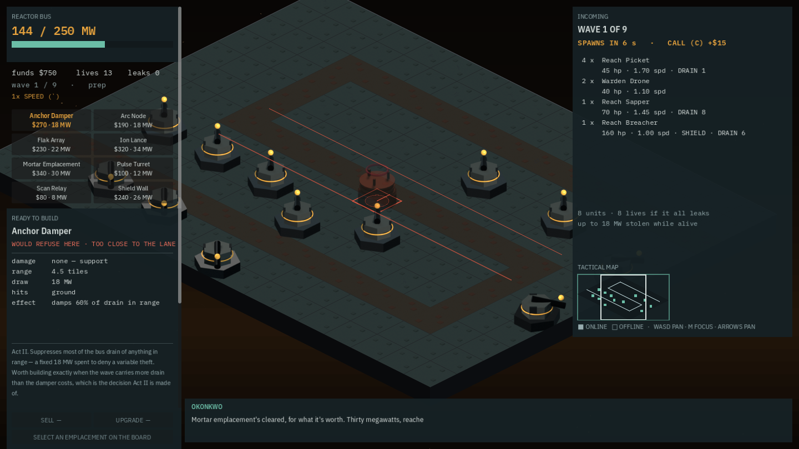
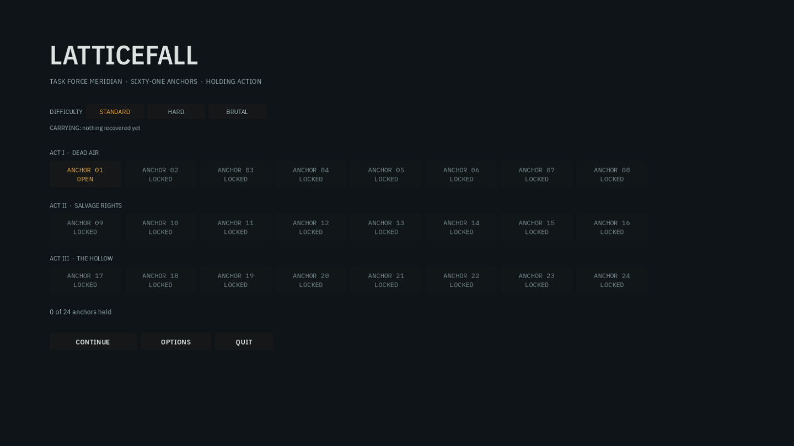

The first build a stranger could run, and the 56 KB of internal notes that were inside it
LF-206, opened as a scouting note and closed here as far as one pull request can close it. Until today nothing in this repository produced a binary — the game was playable only out of the Godot editor. It now exports to the web and to Linux, and the packaged build has been played, not merely started. It also, for exactly one export, shipped backlog.json — every unreleased design argument and every line of the owner's play feedback — inside the bundle a browser downloads.
The question that started this was the owner's, and it was narrow: what would it take to deploy to itch.io, and is there an API for the CI pipeline? The API half is nearly trivial — itch ships butler, an official CLI, and publishing is one line with a key in a repository secret. The other half is that this project had never built anything. export_presets.cfg did not exist. Nothing under tools/ produced a file a person without Godot could open.
So the deliverable here is not the upload. It is the two things that have to be true before an upload means anything: a build exists, and the build has been proved to play.
Web first, and the reason is in project.godot
The obvious first target is Windows — it is what the owner plays. Web won anyway, on three facts already sitting in the repository rather than on preference. The renderer is gl_compatibility, which is the only rendering method Godot supports on the web at all; Forward+ and Mobile are built around modern low-level graphics APIs that do not exist there. There are zero GDExtensions. And a grep for Thread, WorkerThreadPool, Mutex and Semaphore across scripts/ returns nothing, which means the single-threaded web export works — and that matters more than it sounds, because a threaded Godot build needs SharedArrayBuffer, which needs the Cross-Origin-Opener-Policy and Cross-Origin-Embedder-Policy headers, which needs control of the server. Single-threaded is a plain static upload. Godot's own documentation recommends it for itch.io specifically.
The practical argument is better than the technical one. A web build is a URL. The owner can send one link to someone and get an opinion back, with nothing installed and nothing downloaded by hand — which is the actual bottleneck this project has, given that the only person who has ever played this game wrote it.
A second preset, Linux, exists purely as a verification vehicle. --verify has to launch the packaged build as a subprocess, and a web bundle cannot be launched by a subprocess. Its binary_format/embed_pck=true makes one self-contained 122 MB file, which is what lets the verifier copy it outside the repository and run it there — the only way to prove the pack does not quietly read res:// off the working tree it was built beside.

build/linux/latticefall.x86_64 copied to a scratch directory outside the repository, with $XDG_DATA_HOME redirected so the run could not touch the owner's real save. coverage 0.9992, 165 distinct tones, 900 of 900 frames, zero script errors. This is the frame that says the pack is self-contained: no .godot/ cache, no LFS working copy, no Godot install in reach.A JSON file is not a resource, and that is the whole trap
export_filter="all_resources" packs every scene, script, imported texture, font and audio file — and nothing at all from data/, because .json has no importer and is therefore not a resource in Godot's sense. The build would have exported cleanly, started cleanly, and then found no anchors, no towers and no enemies. One include_filter line stands between here and that.
The obvious spelling of that line is include_filter="*.json". It was written, it worked, and it was wrong.
$ strings -a build/web/index.pck | grep -a 'anchor-13.json'
"title": "LF-172 ARCHAEOLOGY DONE — BAL-01's finding did not MOVE, it was not
right as published, and the backlog's four candidate causes are all ruled out.
LF-172 recorded 'why it moved is unknown' and named a content edit to
anchor-12/13 as the first place to look …"*.json matches backlog.json at the repository root — 56 KB of unreleased design argument, abandoned approaches, and the owner's own play feedback, packed into a bundle any visitor could download and read. It was found by running strings over the pack out of idle curiosity about whether the data had made it in.The fix is one narrower filter — data/*.json,assets/renders/sprites.json — and it took thirty seconds. What is worth keeping is the shape of the failure. It had no symptom. The export was green, the build ran, every anchor loaded, the gate was green, and the leak was 1.3 MB of files that behaved exactly like the ones that were supposed to be there. Nobody was going to run strings over a pack twice.
So the gate got the cheapest check in the file
export presets is tier 1 and costs about 190 ms. It launches nothing. It reads every res://… literal out of scripts/*.gd — FileAccess.open and load() alike, 48 paths — plus the directories DirAccess.open() walks, and runs each one through each preset's include and exclude globs. It asserts against what the source actually opens, so a new FileAccess.open("res://data/…") written next month is covered the day it is written, with no edit to the check.
And it asserts the other direction, which is the one that would have caught the leak: the include filter must not reach anything outside data/ and assets/. Reconstructing the exact configuration that shipped the backlog turns it red and names the file.
include_filterdropped → FAIL, 31 paths the game opens would not be packed, e.g.data/anchors/anchor-01.jsondata/excluded wholesale → FAIL, same 31 pathsexport_pathdrifted from whattools/export.pylooks for → FAIL- a preset renamed in the editor's export dialog → FAIL, wants a preset named 'Web'; the file has ['HTML5', 'Linux']
- the original wide
*.jsoninclude → FAIL, include_filter reaches 1 file(s) outside data/ and assets/ — ['backlog.json'] config/versionmissing → FAIL; butler's--userversionneeds one
That last mutation matters more than it looks. The Godot editor rewrites export_presets.cfg wholesale every time its export dialog is opened — renaming a preset or widening a filter is a diff nobody reads line by line, and it is exactly the kind of edit that arrives months after anyone remembers why the filter was narrow.
The autoload that vanished and said nothing
project.godot registers _mcp_game_helper as an autoload pointing into addons/godot_ai/ — written there by the editor's MCP plugin. An MCP bridge has no business in a player's build, so addons/* is excluded, which means the autoload's script is genuinely absent from the pack; strings over the bundle confirms the only surviving addons/ path is plugin.cfg.
The packaged build was then played through two anchors and logged zero autoload complaints, zero script errors, and a correct board both times. Godot 4.7.1 drops an autoload whose script is missing from the pack in complete silence.
That is harmless here — the helper's own docstring says it no-ops when the debugger channel is inactive, which a release build always is. It is also precisely why it is worth writing down: the same silence would greet Content, Progress, Tuning or Ui being excluded by a filter someone widened, and the symptom of that is a menu that draws and a level that does not. So the check now reads the [autoload] block too and asserts each script survives the filters, with the MCP helper as the one exemption, declared by name so the exception is visible rather than implied. Widening the exclude filter to eat Content and Progress turns it red and names both.
It runs in a browser

What this cost, and what it did not buy
- 1.2 GB of Godot export templates, a one-time download
tools/export.py --ensure-templatesnow performs in-process; only the 225 MB this project targets is extracted. - 48 seconds per preset to export, measured, both presets.
- 4.2 seconds to play 900 frames of anchor-13 out of the packaged build and read back what it drew.
- 90 MB for the web bundle — 39.5 MB of
index.wasmand 53.8 MB ofindex.pck. That is what a browser player waits on, and it is the number this does not fix.
The size question is filed rather than answered, deliberately (LF-282). The two large tenants inside the pack are 22 MB of assets/renders and 28 MB of music. About 13 MB of the renders are the 576 loose per-sprite PNGs, which the board does not draw from — it draws from the two atlas pages. They look like dead weight. But assets/renders/sprites.json references both, and scripts/sprites.gd calls load() by path at three separate sites, so whether the loose files are a live fallback or vestigial is a question about that function's branches. Deleting their inputs and hoping is not an answer. Godot's documentation also claims itch.io does not compress on the fly, which would make that 39.5 MB WASM a 39.5 MB download — but that was read, not measured, and measuring it is one request against a real itch page once there is one.
Nothing here uploads anything. Publishing is a release workflow's job, because a credential that can push to a storefront belongs in CI secrets and not in a tool any agent can run. This file's contract ends at a verified build exists in build/.
And one thing genuinely remains the owner's, not an engineering call: this repository has no LICENSE file, and the music was generated under the owner's own subscription. Public distribution — even free, even on itch — is a different question from personal use under most generators' terms. LF-206 has said so since it was filed. It is the item most likely to surface late, and it is the only thing standing between a verified build and a link.